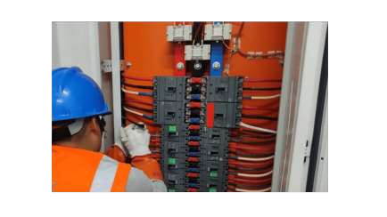
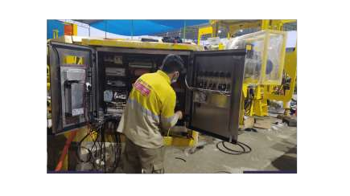
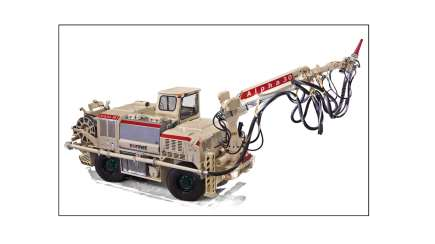
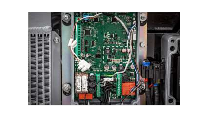
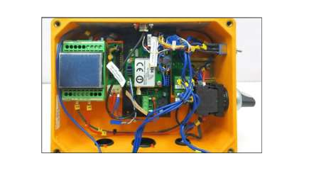
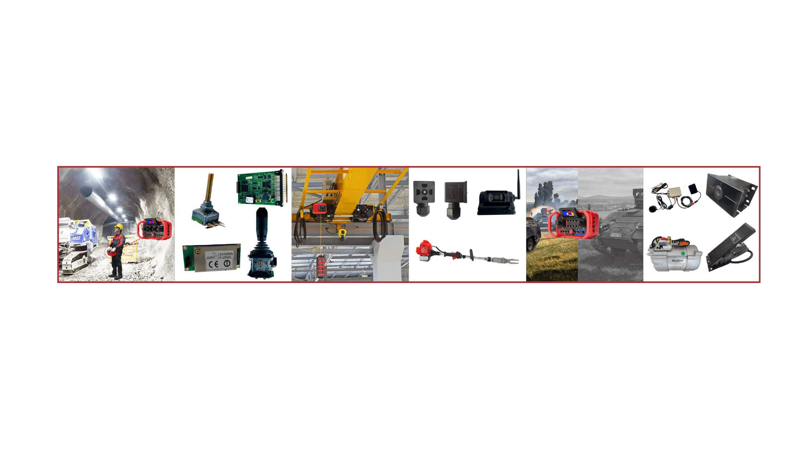
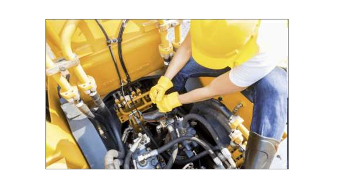
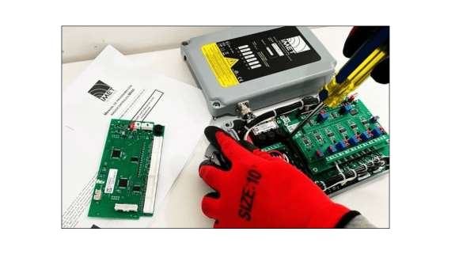

Fabricación a medida
Producción de componentes y sistemas específicos para el equipo.

TECAS
Servicio de reparación de tableros eléctricos orientado a recuperar y conservar la operatividad del equipo. La atención parte de la revisión del sistema y de las condiciones de funcionamiento reportadas.

TECAS
Servicio de reparación de equipos putzmeister orientado a recuperar y conservar la operatividad del equipo. La atención parte de la revisión del sistema y de las condiciones de funcionamiento reportadas.

TECAS
Servicio de reparación de equipos alpha 20 / alpha 30 orientado a recuperar y conservar la operatividad del equipo. La atención parte de la revisión del sistema y de las condiciones de funcionamiento reportadas.

TECAS
Servicio de reparación de control remoto imet orientado a recuperar y conservar la operatividad del equipo. La atención parte de la revisión del sistema y de las condiciones de funcionamiento reportadas.

TECAS
Servicio de reparación de control remoto hetronic orientado a recuperar y conservar la operatividad del equipo. La atención parte de la revisión del sistema y de las condiciones de funcionamiento reportadas.
Soluciones
Además de vender producto, se desarrolla la solución completa cuando el equipo lo requiere.
Producción de componentes y sistemas específicos para el equipo.
Diseño de tableros y soluciones de control adaptadas a la operación.
Abastecimiento de repuestos y componentes desde marcas originales.
Adaptación e instalación del sistema de control en la maquinaria.


DCH
Servicio de mantenimiento y reparación de maquinarias pesadas orientado a recuperar y conservar la operatividad del equipo. La atención parte de la revisión del sistema y de las condiciones de funcionamiento reportadas.

DCH
Servicio de mantenimiento de radiocontroles remoto de maquinaria pesada orientado a recuperar y conservar la operatividad del equipo. La atención parte de la revisión del sistema y de las condiciones de funcionamiento reportadas.
Soluciones
Además de vender producto, se desarrolla la solución completa cuando el equipo lo requiere.
Producción de componentes y sistemas específicos para el equipo.
Diseño de tableros y soluciones de control adaptadas a la operación.
Abastecimiento de repuestos y componentes desde marcas originales.
Adaptación e instalación del sistema de control en la maquinaria.